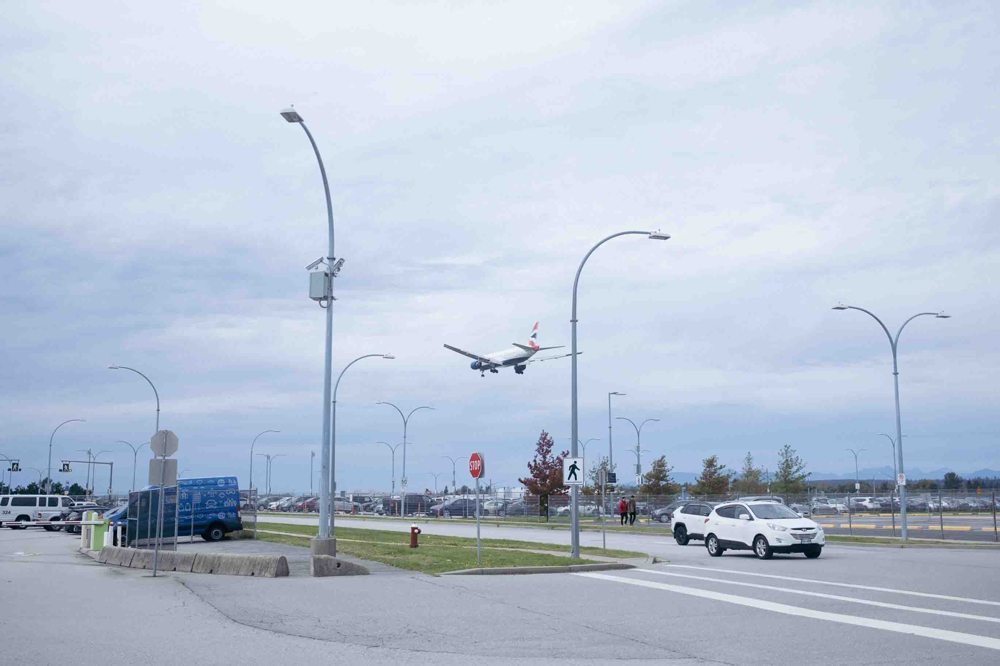

September 29, 2029: A day on the beach, and even more 'za!'
Because Kat is in town, we took a trip down to the beach for a walk and a quick bite to eat. It's a shame I haven't been down here more, as I actually live really close
to the beach. Life's been kinda busy with school and work, but I really should make an effort to get down there more. Our first stop was to go to Craft for a round of drinks and more
pizza. To our pleasant surprise, Craft has happy hour all day on Sunday! Cheap eats and drinks are a necessity while I'm school so I may need to come back here often.
Next we went down to the beach for a walk. While it was sunny, it was actually pretty cold. But it wasn't hard to be inspired to take some street photography here. As I mentioned before, I've been really busy and haven't had
a lot of time to actually get out here and be creative with my camera. I hope to change that soon, as I'm starting to get more comfortable being a here in my new home. Stay tuned for more!
September 28, 2029: A night of live music, tacos, and a little slice of 'za!
Finally! The first long weekend since the start of school! Kat joined me in Vancouver from Edmonton over the weekend, and I finally got a day off of work to enjoy the city a little.
We started off with some shopping over in Richmond, and I picked up a Super Puff jacket that is rated up to -30°C. Hopefully I won't be needing that here, but so far it's actually been
a little colder here then it has been back in Edmonton. I guess in Vancouver, the temperature is more moderate throughout the whole year unlike the big swing from hot to cold back at home.
Mid way through our shopping we stopped by Japadog to try some of their hot dogs. I had actually walked by this restaurant multiple times in the past and always wanted to try it. It was a good snack,
and gets a recommenation from me!



After shopping we decided to do something a little more unique and headed by train down to Gastown for some live music and dinner. We managed to get
to the restaurant before the end of happy hour, so we got a round of tacos and a mushroom pizza, along with a couple pints of local beer. Ryland Moranz
played a set while we ate dinner, who is from Alberta! After dinner, it was back home to drop off our shopping and we ended up just crashing for the night.
Copyright © Ken Yau. All rights reserved.